专题3.4 探索与表达规律
专题3.4 探索与表达规律


教学目标 | 1. 知识技能：学会用代数式表示简单问题中的数量关系，能运用合并同类项、去括号等法则验证所探索的规律。 2. 思维方法：经历从特殊到一般、再从一般到特殊的探究过程 ，体会代数推理的特点和作用，培养观察、分析、归纳、猜想等思维能力。 3. 情感态度：感受数学的趣味性，体会数学“从特殊到一般，从具体到抽象”的思维过程，激发探究热情和对数学的热爱。 |
教学重难点 | 1.重点 （1）学会在实际情景中探索并发现规律。 （2） 熟练掌握利用字母表示规律，并能用运算验证规律。 2.难点 （1）灵活运用观察、归纳、猜想等方法，从具体问题中抽象出一般规律。 （2）准确用字母、运算符号表示一般规律 ，并能清晰解释其含义和应用。 |

知识点01 规律类：数字变化型
一、等差规律：前后两项差几写成几×n，令 n=1，在通过加减来凑第一个数。
例如：上面的第（3）列数，相差 3，则先得到 3n，而第 1 项是 4，当 n=1 时，
3n=3，3+1=4，所有第n项表示为 3n+1.
拓展延申：

【即学即练1-1】“一尺之锤，日取其半，万世不竭．”在如图的三角形中，一条中线将一个三角形分为面积相等的两部分，在此基础上再作一条中线，可得到原三角形一半面积的一半，即
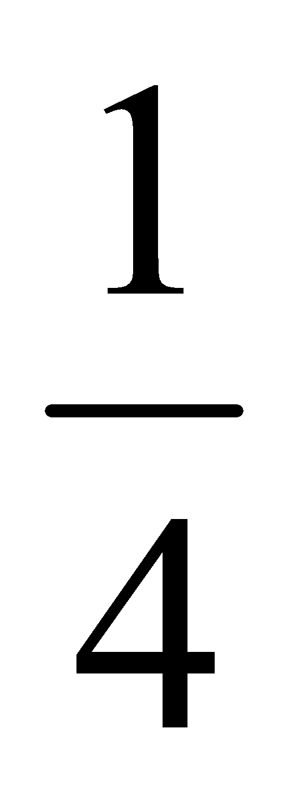
，已知 ，根据这个几何图形的规律求得
，根据这个几何图形的规律求得 …
…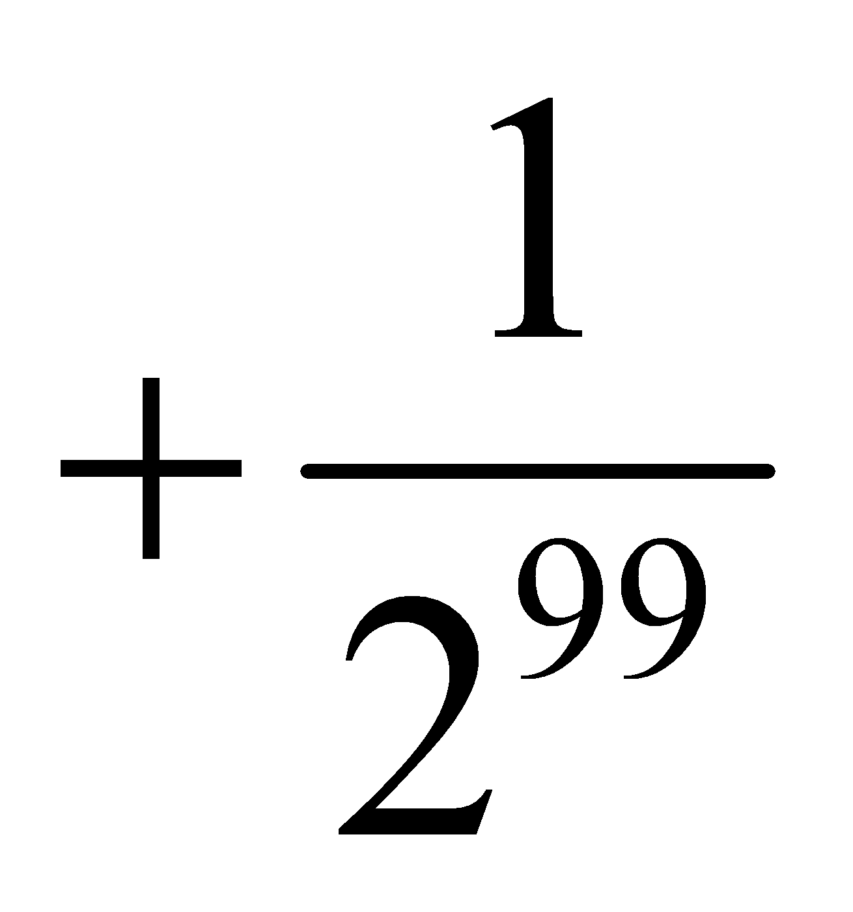
的值为（ ）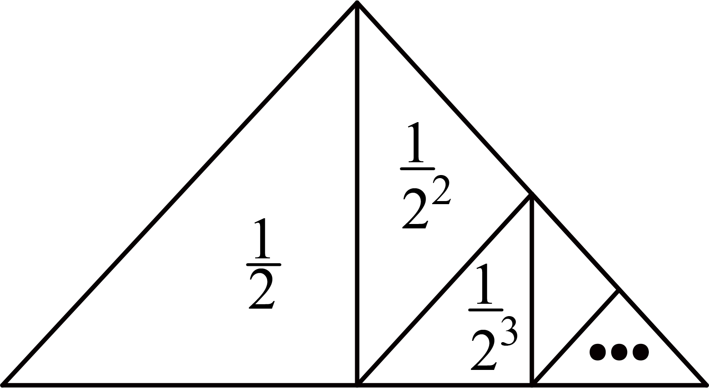
A．1 B． C．
C． D．
D．
【即学即练1-2】观察下列等式： ，
， ，
， ，
， ，
， ，
， ，
， ，
， ，
， ．回答下面问题：
．回答下面问题： 的末位数字是 ．
的末位数字是 ．
知识点02 规律型：图形变化类
1.基本思想：图形规律 数字规律
2.基本方法：
（1）从具体的实际问题出发,观察各个数量的特点及相互之间的变化规律.
（2）由此及彼,合理联想,大胆猜想
（3）善于类比,从不同事物中发现相似或相同点；
（4）总结规律,得出结论,并验证结论正确与否;
【即学即练2-1】化学中把仅有碳和氢两种元素组成的有机化合物称为碳氢化合物，又叫烃，如图，这是部分碳氢化合物的结构式，第1个结构式中有1个C和4个H，分子式是 ；第2个结构式中有2个C和6个H，分子式是
；第2个结构式中有2个C和6个H，分子式是
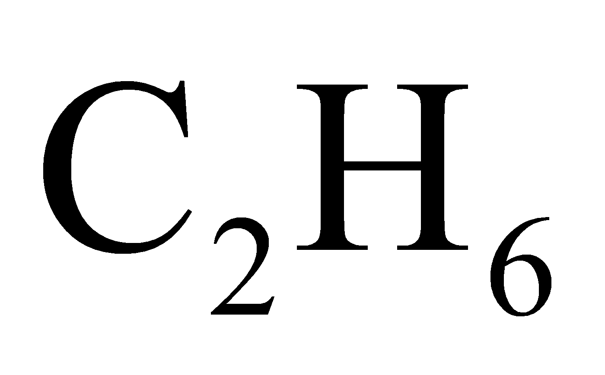
；第3个结构式中有3个C和8个H，分子式是 …按照此规律，回答下列问题．
…按照此规律，回答下列问题．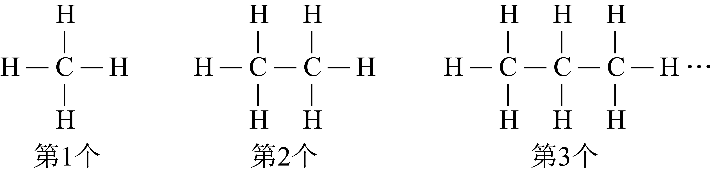
(1)第6个结构式的分子式是________；
(2)第n个结构式的分子式是________；
(3)试通过计算说明分子式 的化合物是否属于上述的碳氢化合物．
的化合物是否属于上述的碳氢化合物．
【即学即练2-2】【观察思考】
用同样大小的圆形棋子按如图所示的规律摆放：第1个图形中有6个棋子，第2个图形中有9个棋子，第3个图形中有12个棋子，第4个图形中有15个棋子，以此类推．
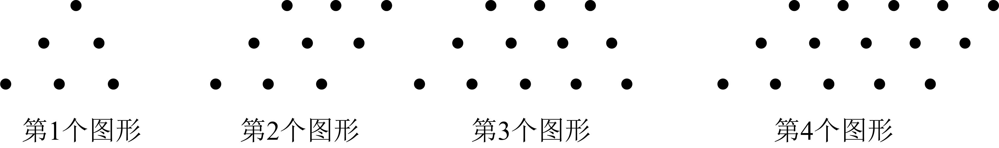
【规律发现】
（1）第6个图形中有____________个圆形棋子；
（2）第n个图形中有____________个圆形棋子；（用含n的代数式表示）
【规律应用】
（3）将2024个圆形棋子按照题中的规律一次性摆放，且棋子全部用完．若能摆放，是第几个图形？若不能，请说明理由．

题型1 数字类规律探索之排列问题
【典例1】一列数
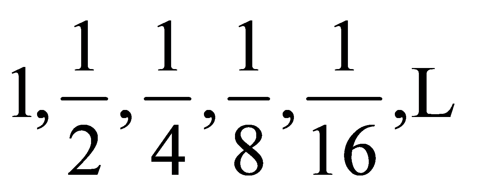
第6项是 ，第2018项是 ．【变式1】观察下列一组有规律的数： ，
， ，
，
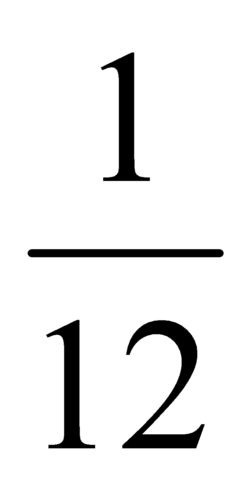
， ，
，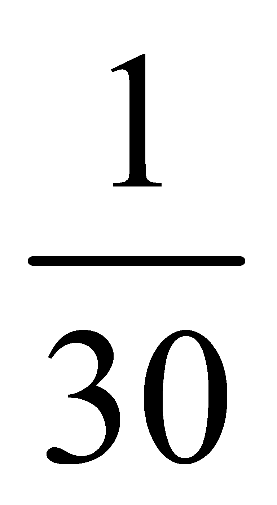
， ，
， ，根据其规律可知：第
，根据其规律可知：第 个数是 ．
个数是 ．【变式2】有一列数：
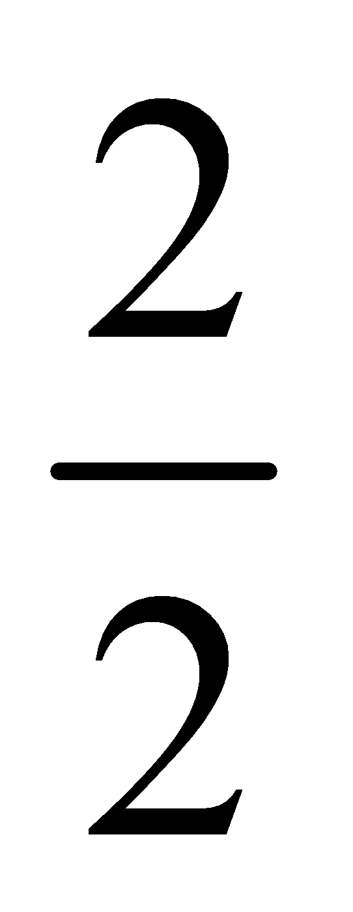
， ，
，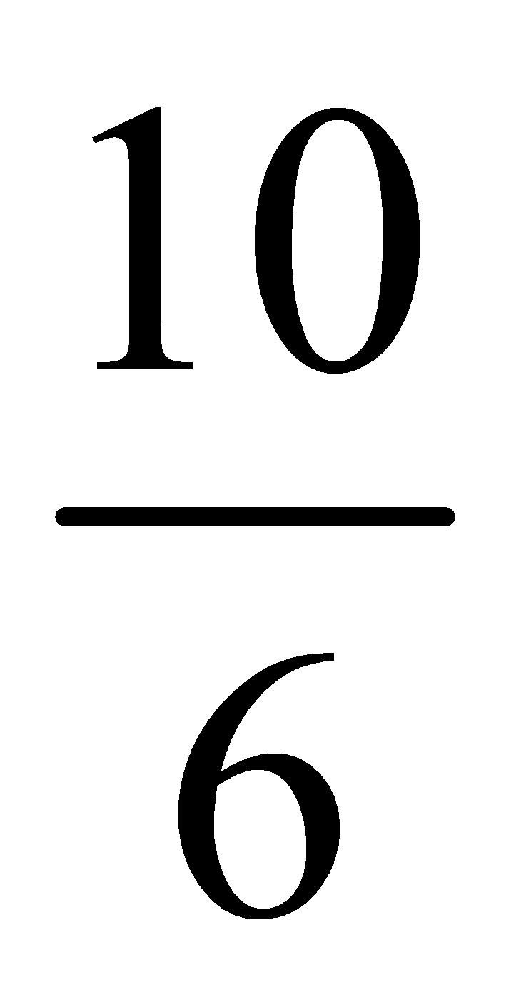
， ，，则第个数表示为 ．
，，则第个数表示为 ．【变式3】按一定规律排列的一组数据： ，则按此规律排列的第
，则按此规律排列的第 个数是 ．
个数是 ．
题型2 数字类规律探索之末尾数字问题
【典例2】观察等式： ，
， ，
， ，
， ，，，，…．通过观察，用你发现的规律确定
，，，，…．通过观察，用你发现的规律确定
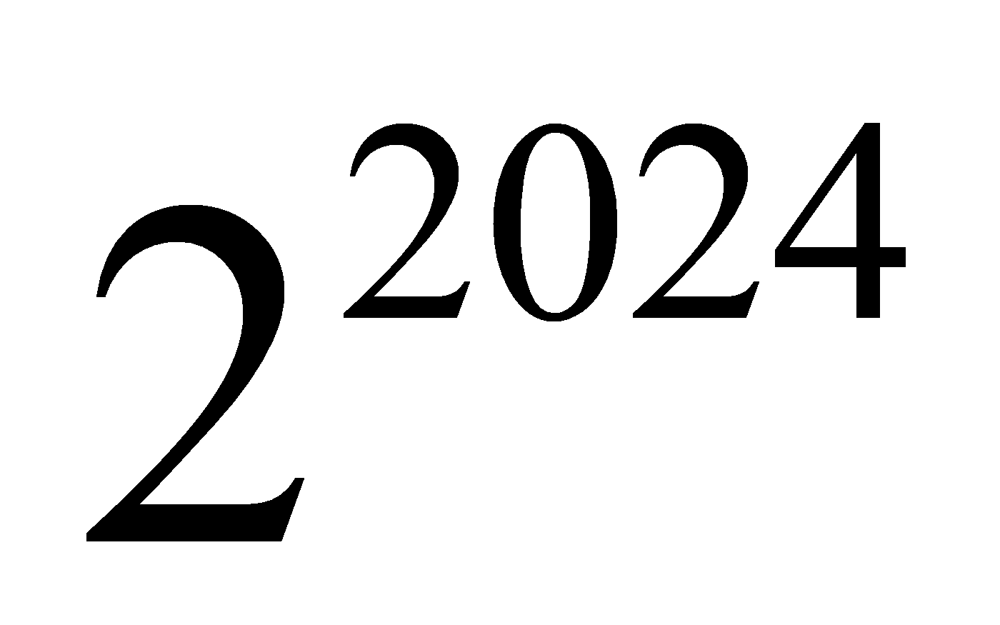
的个位数字是 ．【变式1】计算
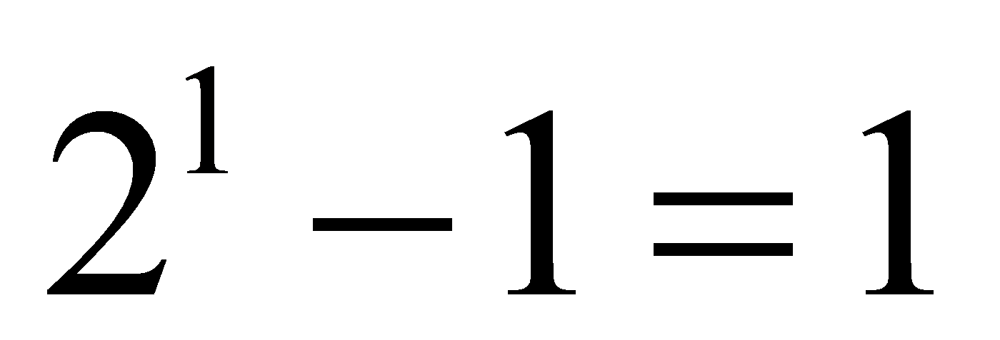
， ，
，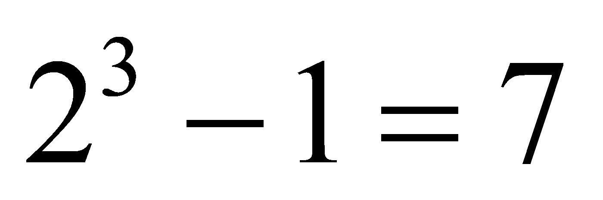
， ，
，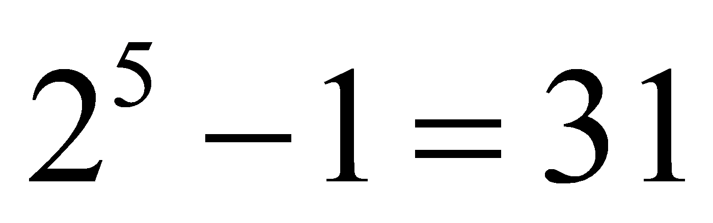
，…归给计算结果中的个位数字规律，猜测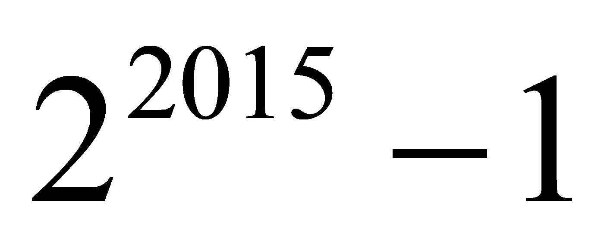
的个位数字是 ．【变式2】观察下列几个算式：
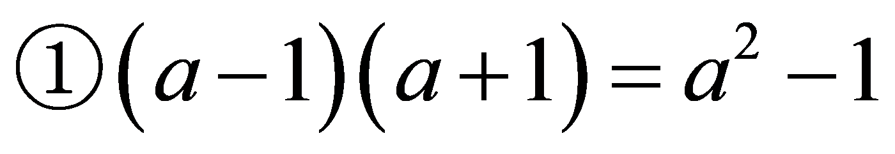
； ；
；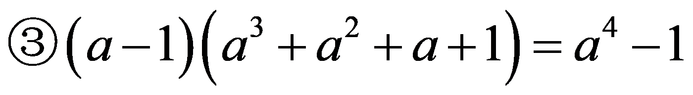
； ，……，结合你观察到的规律判断：
，……，结合你观察到的规律判断：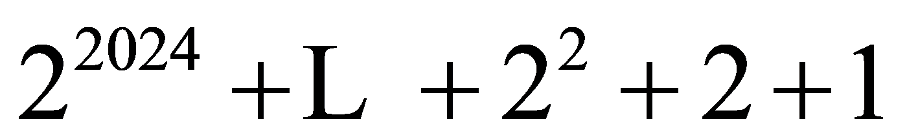
的计算结果的末位数字为 ．【变式3】二进制即“逢二进一”，如 表示二进制，将它化为十进制数为
表示二进制，将它化为十进制数为 ，（注：
，（注： ），把二进制数
），把二进制数
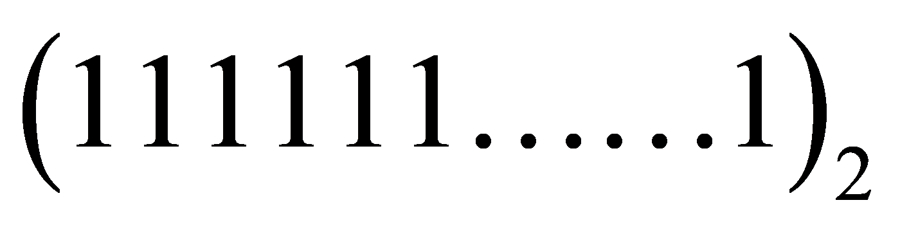
（注：里面有2024个1）化为十进制数后，此十进制数的个位数字是 ．题型3 数字类规律探索之新运算问题
【典例3】已知 ，其中
，其中 表示当
表示当 时代数式的值，如
时代数式的值，如 ，则
，则
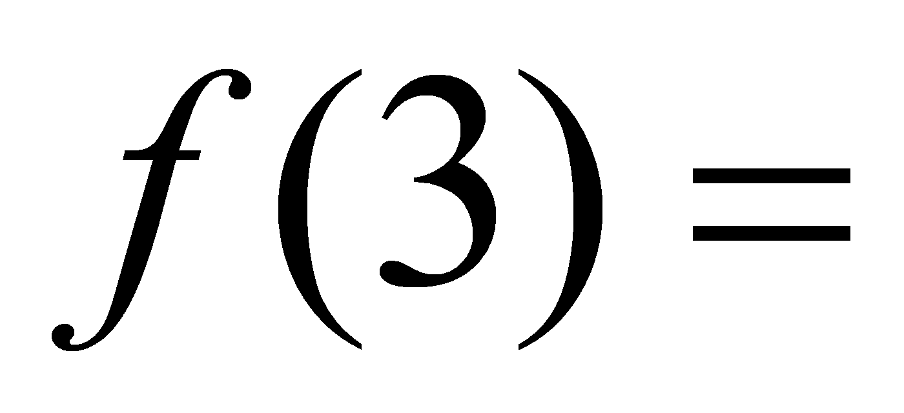
， ．
．【变式1】已知 ．设为正整数，请用关于的等式表示这个规律 ．
．设为正整数，请用关于的等式表示这个规律 ．
【变式2】a是不为2的有理数，我们把 称为a的“伴随数”，如3的“伴随数”是
称为a的“伴随数”，如3的“伴随数”是
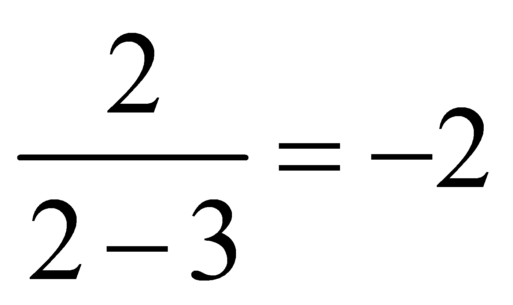
， 的“伴随数”是
的“伴随数”是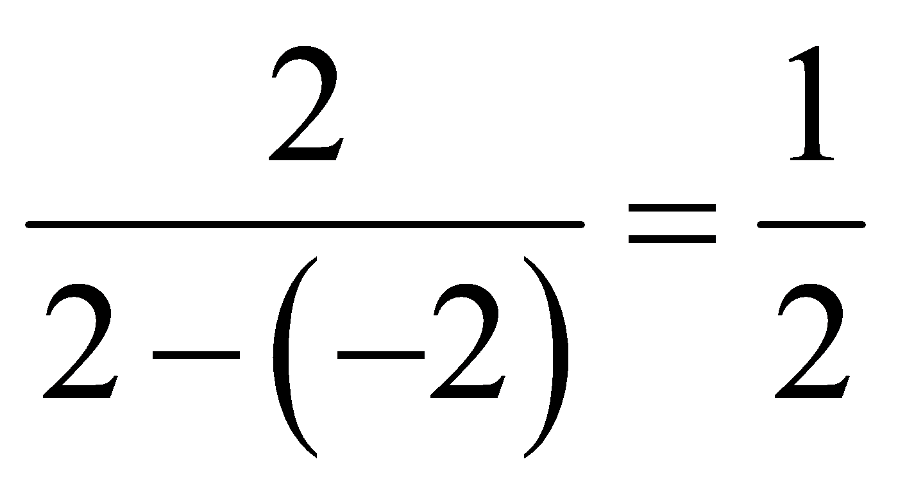
，已知 ，
， 是
是 的“伴随数”，
的“伴随数”， 是的“伴随数”，
是的“伴随数”， 是的“伴随数”，…，以此类推，则
是的“伴随数”，…，以此类推，则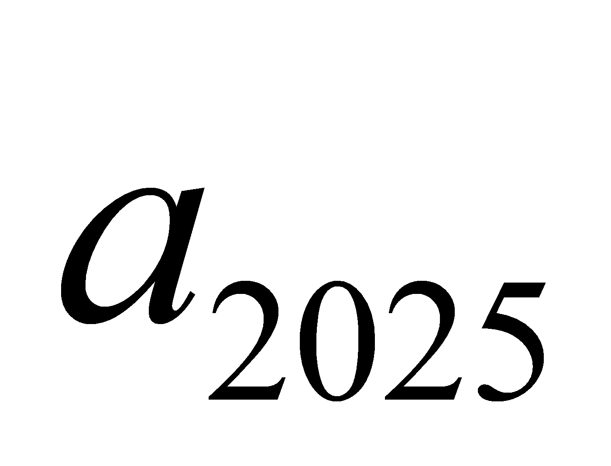
等于 ．【变式3】定义一种对正整数n的“F”运算：①当n为奇数时， ；②当n为偶数时，
；②当n为偶数时，
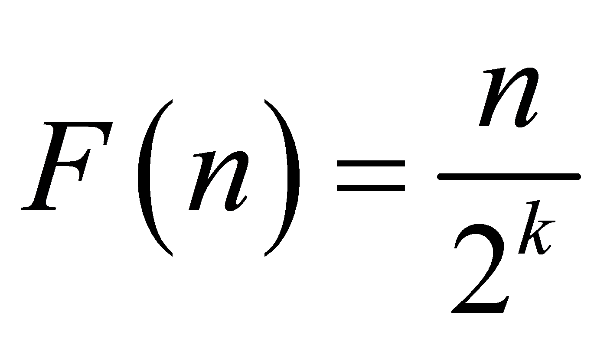
（其中k是使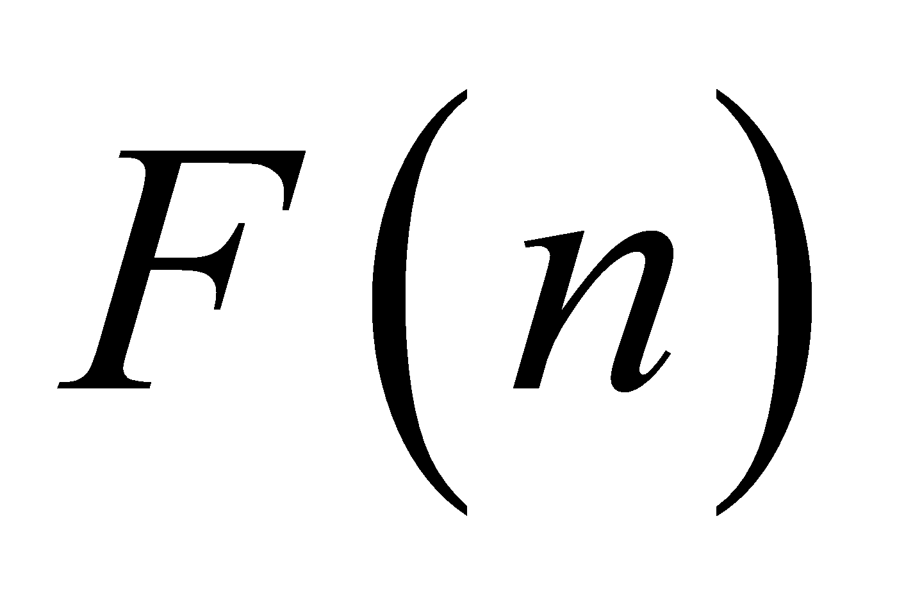
为奇数的正整数）…两种运算交替进行，例如，取 ，则
，则 …，有按此规律继续计算，第2025次“F”运算的结果是 ．
…，有按此规律继续计算，第2025次“F”运算的结果是 ．题型4 数字类规律探索之等式问题
【典例4】观察下列算式：
①
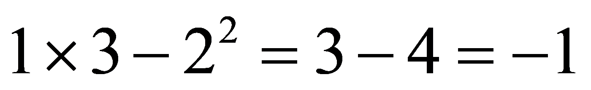
②
③
……
把这个规律用含字母（为正整数）的式子表示出来 ．
【变式1】已知
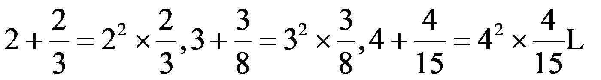
根据以上规律，可得 ，猜想：
，猜想： ．经检验，猜想 （填“正确”或“错误”）．
．经检验，猜想 （填“正确”或“错误”）．【变式2】观察下列式子：
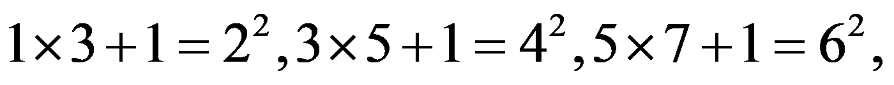
…探索以上式子的规律，请写出第n个等式： ．【变式3】定义新运算： ，
， （右边的运算为平常的加、减、乘、除）．
（右边的运算为平常的加、减、乘、除）．
例如∶ ，
，
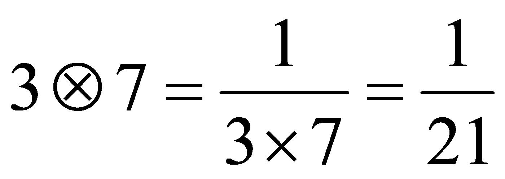
．若
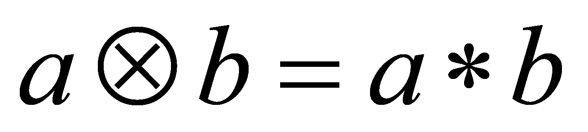
，则称有理数a，b为“隔一数对”．例如∶ ，
， ，即
，即 ，所以2，3就是一对“隔一数对”．
，所以2，3就是一对“隔一数对”．
请同学们解答下列问题：
(1) ，1是“隔一数对”吗？请说明理由；
，1是“隔一数对”吗？请说明理由；
(2)已知两个连续的非零整数都是“隔一数对”，计算：
 ．
．
题型5 图形类规律探索之数字问题
【典例5】观察下列正方形中四个数，分别具有的一定规律，根据规律可得 ．
．
【变式1】下面每个表格中的四个数都是按相同规律填写的：

根据此规律确定 的值为
的值为
【变式2】我们知道， ，那么如何求
，那么如何求 的值？
的值？
【观察思考】请你仔细观察，找出下面图形与算式的关系：
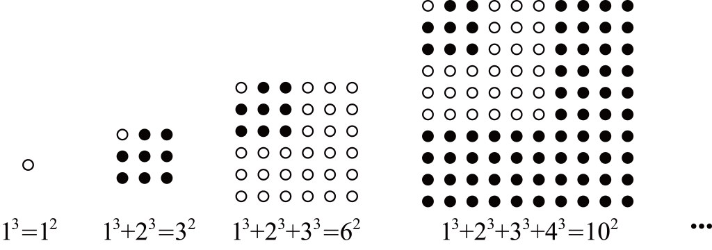
【归纳猜想】
（1）
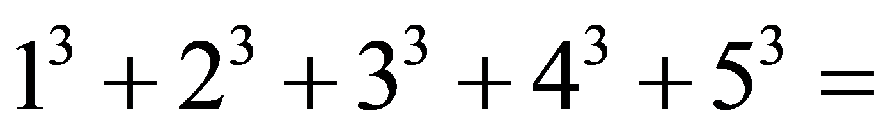
______．（2） ______．
______．
【拓展应用】
（3）求
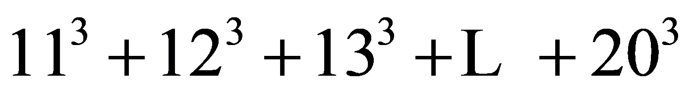
的值．【变式3】观察下列图形．将边长为1的正方形纸片按图1所示方法进行对折，记第1次对折后得到的图形面积为 ，第2次对折后得到的图形面积为
，第2次对折后得到的图形面积为
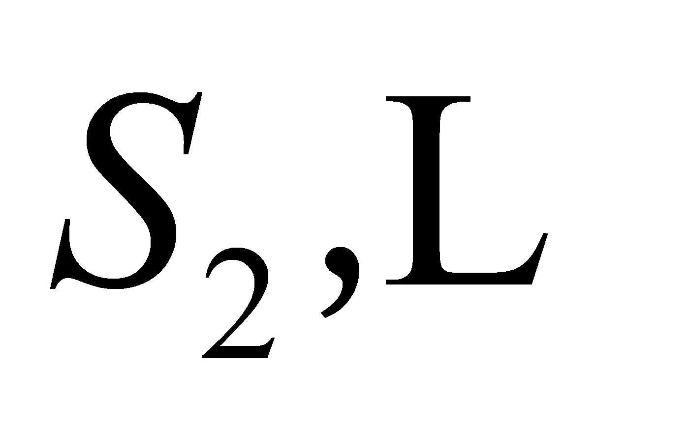
，第 次对折后得到的图形面积为
次对折后得到的图形面积为 ．
．
(1)继续观察图形填空：设
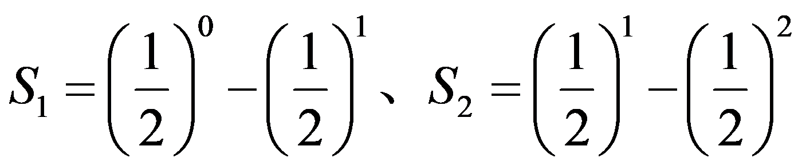
，计算 ___________，并在上面某个图中将表示
___________，并在上面某个图中将表示 的区域涂成阴影；
的区域涂成阴影；(2)请根据上面图形计算：
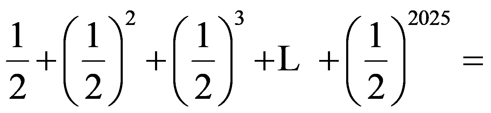
___________（直接写出结果）(3)观察图形并探索（ ）中各式的规律：试写出第个等式 ___________，并说明第个等式成立．
___________，并说明第个等式成立．
题型6 图形类规律探索之数量问题
【典例6】下图是由边长相同的小正方形组成的，其中部分小正方形涂有阴影，依此规律完成此题：

图形标号 | 第一个 | 第二个 | 第三个 | 第四个 |
涂有阴影的小正方形的个数 | 5 | a | 13 | b |
(1) ________，
________， ________；
________；
(2)第n个图形中涂有阴影的小正方形的个数为________个；（用含n的代数式来表示）
(3)按照这种规律下去，求第400个图形中涂有阴影的小正方形的个数．
【变式1】用火柴棒按图中的方式摆图形：

按图示规律填空：
图形标号 | ① | ② | ③ | ④ | ⑤ |
火柴棒的根数 | 5 | 9 | 13 |
|
|


(1)________，________；
(2)按照这种方式搭下去，则搭第个图形需要火柴棒的根数为________；（用含的代数式来表示）
(3)按照这种方式搭下去，用（2）中的代数式求搭第2024个图形需要的火柴棒的根数．
【变式2】如图，将形状，大小完全相同的“●”和线段按照一定的规律摆成下列图形，第1个图案中“●”的个数为3，第2个图案中“●”的个数为8，第3个图案中“●”的个数为15，…，以此类推．
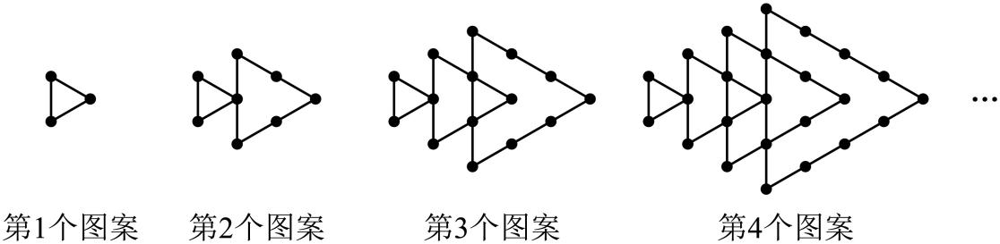
(1)第5个图案中“●”的个数是________．
(2)请用含n的代数式表示第n个图案中“●”的个数．
(3)请用含n的代数式表示第n个图案中最长的线段上“●”的个数．

一、单选题
1．有一数列： ．第9个数是（ ）
．第9个数是（ ）
A．
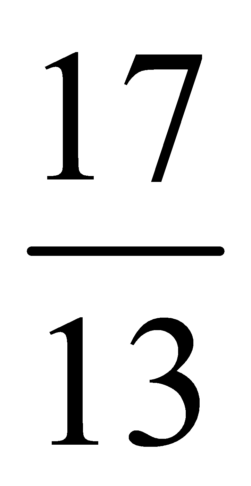
B． C．
C． D．
D．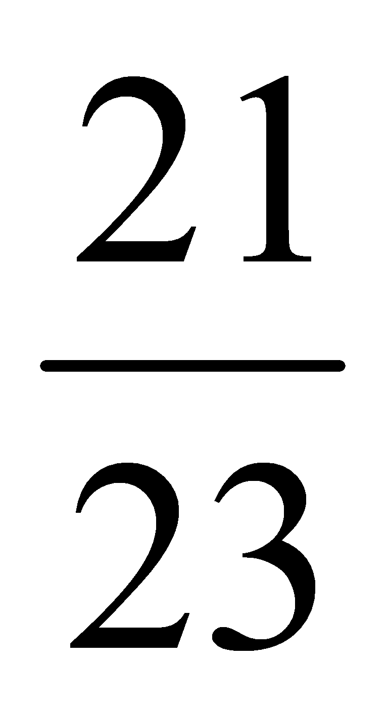
2．一列数 ，其中
，其中 ，
，
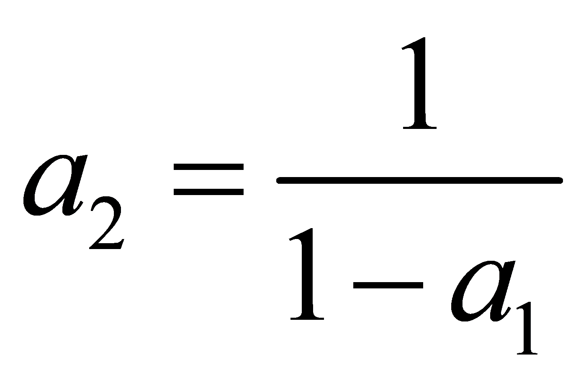
，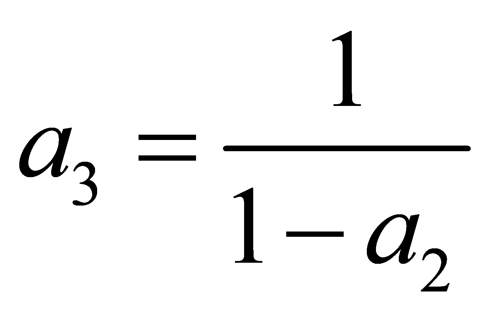
，…， ，则
，则 的值为（ ）
的值为（ ）A． B．
B． C．2020 D．
C．2020 D．
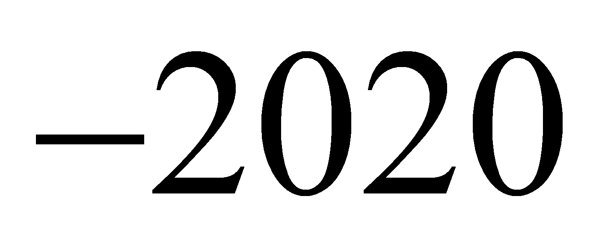
3．如图，先将一个大正方形分割成4个小正方形．用同样的方法，再将每个小正方形分割成4个更小的正方形．这样连续分割8次后得到的最小正方形的个数是（ ）

A． B．
B．
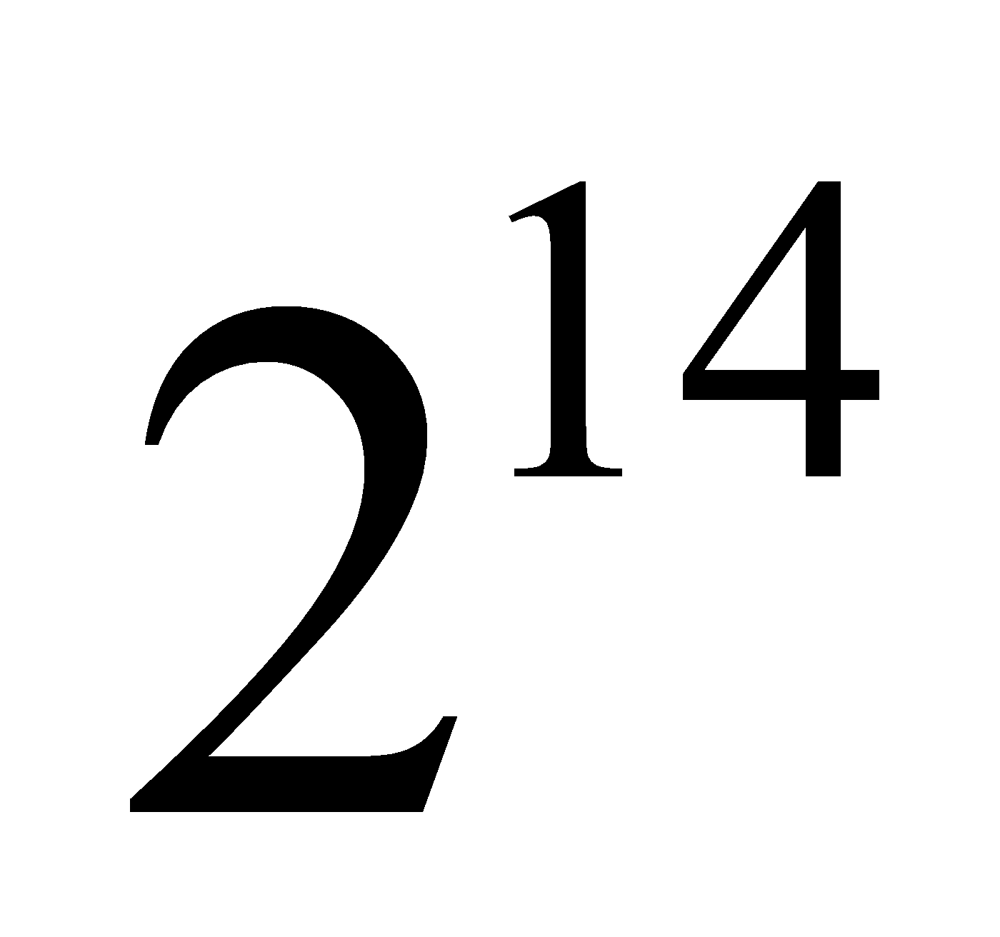
C．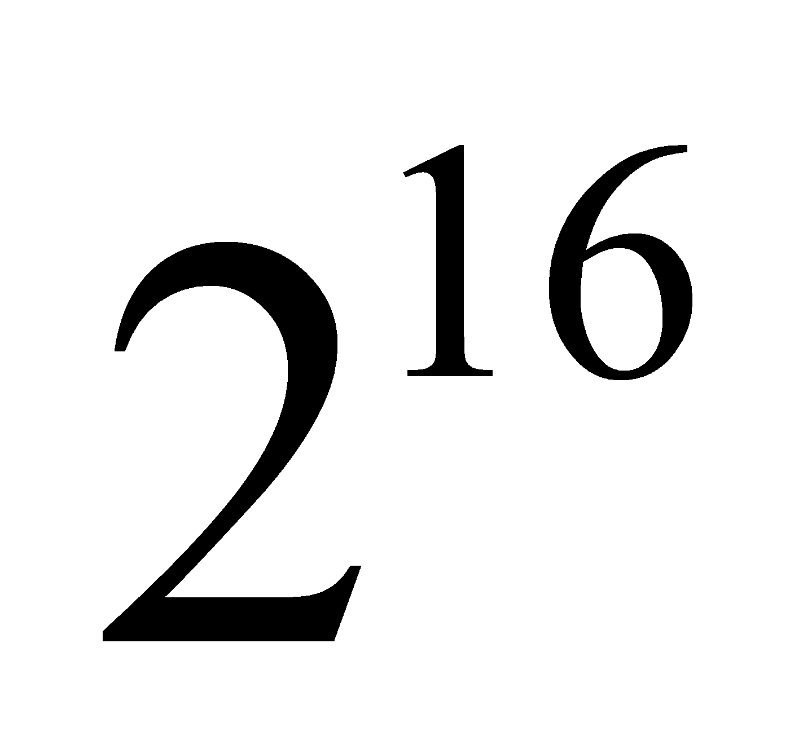
D．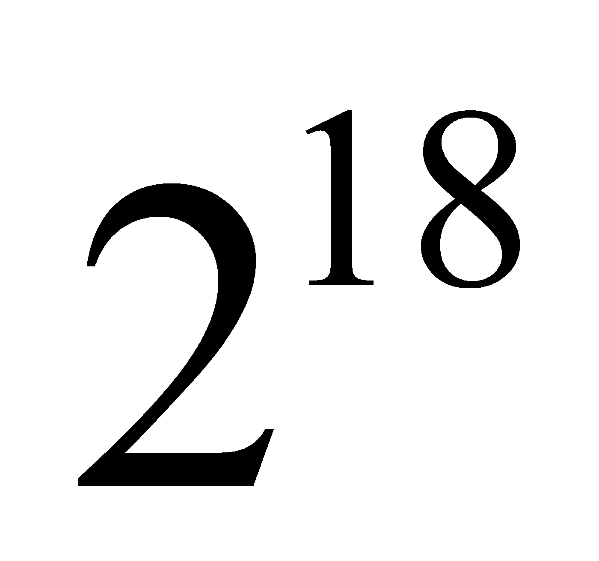
分割次数 | 1 | 2 | 3 | 4 | … | 8 |
最小正方形个数 |
|
| 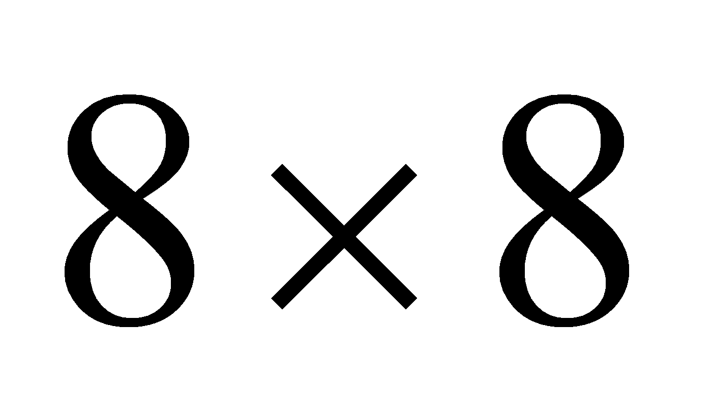 即 | 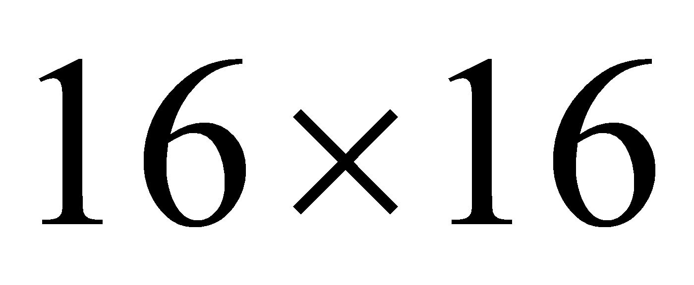 即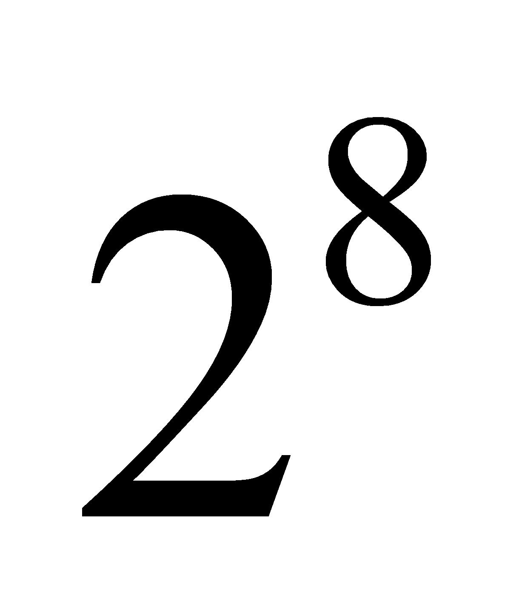 | … | … 即 |
 即
即 即
即
4．我国南宋数学家杨辉发现了如图所示的三角形数表，我们称之为“杨辉三角”．图中两线之间的一列数： ，
， ，
， ，
， ，
， ，…，我们把第一个数记为，第二个数记为，第三个数记为，…，第
，…，我们把第一个数记为，第二个数记为，第三个数记为，…，第 个数记为
个数记为 ，则
，则
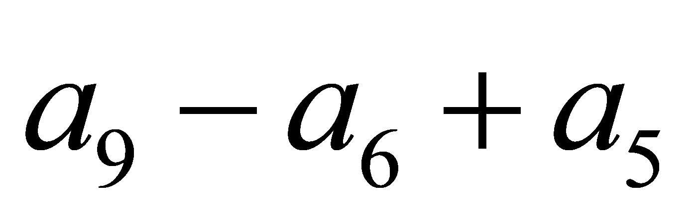
的值是（ ）
A． B．
B． C．
C． D．
D．
5．如图，数轴上 ，
， 两点间的距离为12，一动点
两点间的距离为12，一动点 从点出发，按以下规律跳动：第1次跳动到
从点出发，按以下规律跳动：第1次跳动到 的中点
的中点 处，第2次从点跳动到的中点
处，第2次从点跳动到的中点 处，第3次从点跳动到的中点
处，第3次从点跳动到的中点 处．按照这样的规律继续跳动到点
处．按照这样的规律继续跳动到点 ，
， ，
， ，…
，… （是正整数）处，经过这样2024次跳动后的点
（是正整数）处，经过这样2024次跳动后的点 所表示的数是（ ）
所表示的数是（ ）
A． B． C．
B． C． D．
D．
6．在求两位数的平方时，可以用“列竖式”的方法进行速算，求解过程如图1所示．在图2中的“竖式”，可计算出是（ ）
A．36 B．37 C．38 D．39
二、填空题
7．观察下面一列数，则根据规律第2025个数是 ．
8．如图，按以下规律，在第4个正方形内填入的数是 ．

9．观察一组等式的规律： ，
， ，，…，则第n个等式为： ．
，，…，则第n个等式为： ．
10．桌面上有一个正方体，每个面均有一个不同的编号(1，2，3，……6)，且每组相对面上的编号和为7，将其按顺时针方向滚动(如图)，每滚动 算一次，则滚动第2025次后，正方体朝下一面的数字是 ．
算一次，则滚动第2025次后，正方体朝下一面的数字是 ．

11．如图，用大小相同的正方体木块搭模型，按照这样的规律，第4个模型需要 个正方体木块；第n个模型需要 个正方体木块．

12．如图是一组有规律的图案，它由若干个大小相同的圆片组成．第1个图案中有5个圆片，第2个图案中有8个圆片，第3个图案中有11个圆片，第4个图案中有14个圆片，…，依此规律，第n个图案中有 个圆片（用含n的代数式表示）
三、解答题
13．定义：若一个三位数的十位数字减去个位数字的差恰好等于百位数字，则这个三位数叫做“极差数”．例如，三位数 ，因为
，因为 ，所以它是“极差数”．
，所以它是“极差数”．
【理解定义】
三位数 是否为“极差数”？___________．
是否为“极差数”？___________．
【建模推理】
（1）设一个“极差数”的百位、十位、个位数字分别为 ，则
，则 与
与 的关系式为___________；
的关系式为___________；
（2）任意一个“极差数”都能被11整除吗？为什么？
14．观察下列等式，并完成下列问题：
第个：，
第 个：
个： ，
，
第个：，
第 个：，
个：，

(1)请你写出第 个等式： ；
个等式： ；
(2)第（ ，且为整数）个等式可表示为： ；
，且为整数）个等式可表示为： ；
(3)运用上述结论，计算：．
15．观察下列各等式，并回答问题（是不小于2的正整数）：
 ；；
；； ；；⋯
；；⋯
(1)填空： _______；
_______；
(2)计算：_______；
(3)计算： _______．
_______．
16．观察如图所示的几何体，回答下列问题：
(1)填写表格：
图形名称 | 底面边数 | 侧面数 | 侧棱数 | 顶点数 | |
图① | 三棱柱 | ||||
图② | 四棱柱 | ||||
图③ | 六棱柱 |
(2)根据（1）中的结果，猜想棱柱的侧面数、侧棱数、顶点数与棱柱的底面边数之间的关系．
(3)根据（2）中的猜想，直接写出二十棱柱的侧面数、侧棱数和顶点数．
图形名称 | 底面边数 | 侧面数 | 侧棱数 | 顶点数 | |
图① | 三棱柱 | 3 | 3 | 3 | 6 |
图② | 四棱柱 | 4 | 4 | 4 | 8 |
图③ | 六棱柱 | 6 | 6 | 6 | 12 |
17．数和形是数学的两个主要研究对象，我们经常运用数形结合、数形转化的方法解决一些数学问题．下面我们来探究“由数思形，以形助数”的方法在解决代数问题中的应用．
如图，将一个边长为1的正方形纸片分割成7个部分，部分①是边长为1的正方形纸片面积的一半，部分②是部分①面积的一半，部分③是部分②面积的一半，依次类推．
(1)图中阴影部分的面积为 ；
(2)受此启发，得到 ＝ ；
＝ ；
(3)迁移应用：得到 ＝ （直接写出答案即可）．
＝ （直接写出答案即可）．
18．如图，在边长都为a的正方形内分别排列着一些大小相等的圆．
(1)根据图中的规律，第4个正方形内圆的个数是________，第n个正方形内圆的个数是________．
(2)如果把正方形内除去圆的部分都涂上阴影
①第1个正方形中阴影部分的面积为________，第n个正方形中阴影部分的面积为________（用含a的代数式表示，结果保留 ）．
）．
②若 ，请直接写出第2 024个正方形中阴影部分的面积：________（结果保留）．
，请直接写出第2 024个正方形中阴影部分的面积：________（结果保留）．
19．观察图，解答下列问题．
(1)图中的小圆圈被折线隔开分成六层，第一层有1个小圆圈，第二层有3个圆圈，第三层有5个圆圈，…，第六层有11个圆圈．如果要你继续画下去，那么第9层有_______个小圆圈？
(2)数图中的圆圈个数可以有多种不同的方法．
比如：前两层的圆圈个数和为或 ，由此得，．
，由此得，．
同样，由前三层的圆圈个数和得：，
由前四层的圆圈个数和得： ．
．
由前五层的圆圈个数和得： ．
．
根据上述请你猜测，从1开始的n个连续奇数之和是______（用n的代数式表示）；
(3)计算： _________；
_________；
(4)计算： ．
．
20．已知图1中有1个等边三角形，记作；分别连接这个等边三角形三边中点得到图2，有5个等边三角形，记作 ；再分别连接图2中间的小等边三角形三边中点得到图3，有9个等边三角形，记作；…….按照此规律解答下列问题：
；再分别连接图2中间的小等边三角形三边中点得到图3，有9个等边三角形，记作；…….按照此规律解答下列问题：

(1)图4中有_______个等边三角形，记作 _________；
_________；
(2)图中有_______个等边三角形，记作 _________；（结果用含的代数式表示，不用说理）
_________；（结果用含的代数式表示，不用说理）
(3)在求 的值时，可令
的值时，可令 ，则
，则 ，∴，∴
，∴，∴ ，按此方法计算
，按此方法计算 ；（结果用含的代数式表示）
；（结果用含的代数式表示）